01 / 11 · Mantreshvar
Adi Shakti Moja Majko
0:00 / 0:00
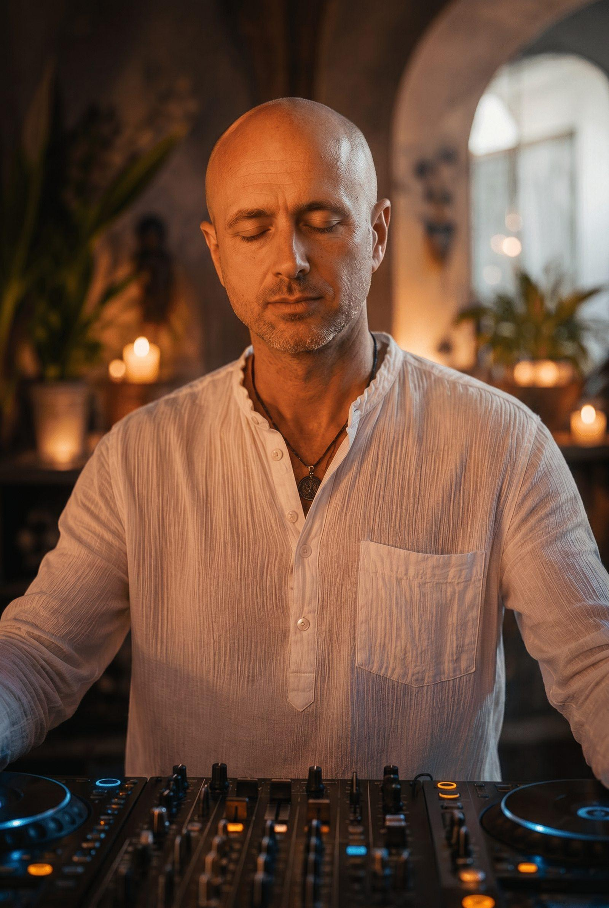
Marko Boško · Zagreb · Auroville
Od Gangesa do Amazone. Set je putovanje, ne popis pjesama.
Ecstatic dance demo, 4. listopada 2026. Jedan sat i pedeset tri minute, dvadeset šest pjesama, jedno putovanje od prvog daha do tišine.
The wave of an ecstatic dance evening: the color under the waveform is the energy of each part
DJ ne miksa pjesme, miksa dijelove pjesama. Tko čuje gdje počinje intro, gdje se ritam lomi i gdje se vraća, zna kada ući i kada izaći. Ovaj vodič to pokazuje na mom demo miksu: svaki primjer je pravi valni oblik, svaki dio se može poslušati.
Jedan udarac. U house glazbi to je bas bubanj: 120 do 125 udaraca u minuti.
Četiri udarca. Prvi je najjači i na njemu počinje sve što je važno.
Osam taktova, 32 udarca. Producenti mijenjaju pjesmu na granicama fraza: svakih 8, 16 ili 32 takta nešto dođe ili ode.
Jedna ili više fraza istog karaktera: intro, breakdown, refren. Dio traje 8, 16 ili 32 takta, rijetko nešto između.
Čitanje valnog oblika: crveno je bas i bubanj, zeleno sredina, plavo visoki tonovi. Kad crvenog nestane, ritam je stao; kad se vrati u punoj širini, to je drop.
Edukativni player: slušaj i gledaj kako se pjesma mijenja. Klikni dio, ponovi ga s LOOP, prati brojanje taktova.
LISTEN —
House, organic house, techno, trance, drum and bass: glazba građena oko instrumenata, ne oko pjevača. Pravljena je za DJ-e, pa su joj počeci i krajevi jednostavni i lako se miksaju. Ako se pojavi glas, obično je to kratki uzorak koji služi kao instrument. Redoslijed je gotovo uvijek isti: intro, breakdown i build-up, main, opet breakdown i build-up, main, outro.
Početak pjesme, napravljen za miksanje. Često samo bas bubanj i udaraljke, pa instrument po instrument svakih 8 taktova. Traje 16 ili 32 takta.
Valni oblik je uzak i ujednačen, crveni udarci u pravilnom redu.
Ovdje ulaziš: intro nove pjesme ide preko outra one koja svira.
Ritam staje. Bas bubanj i bas linija nestaju, ostaju pad, zvukovi, ponekad glas. Prostor da plesači udahnu.
Valni oblik se naglo suzi i crvena boja nestaje.
Ne izlazi iz pjesme usred breakdowna: plesači čekaju drop koji dolazi.
Kraj breakdowna koji raste: bubanj u šesnaestinkama, šum koji se diže, filter koji se otvara. Napetost prije povratka.
Valni oblik raste prema desno, takt po takt.
Ne miješaj ništa novo ovdje: pusti da napetost dođe do vrha.
Trenutak kad se sve vrati: bas bubanj, bas linija, glavna melodija. Prvi takt maina, ono što plesni podij čeka.
Puna širina i crvena boja se vraćaju u jednom taktu.
Drop na drop: kad pustiš drugu pjesmu točno na njezin drop, sobu digneš dvaput.
Meso pjesme: sve je unutra, fraza za frazom, svakih 16 taktova nešto novo. Zove se i drop, groove.
Široko, gusto, sve tri boje.
Najsigurnije mjesto za miks: nema glasa koji bi se sudario s drugim glasom.
Kraj pjesme, intro unatrag: instrumenti odlaze jedan po jedan dok ne ostane samo bubanj i jeka.
Valni oblik se stanjuje, boje blijede.
Ovdje izlaziš: outro i intro sljedeće pjesme sviraju zajedno, 16 ili 32 takta.
… M · O19 → I16 · M …Ritam Reframinga staje u outru; bubanj koji se vraća je intro pjesme Miss You. Sljedeći main je već nova pjesma.
Pop, vokalni house, soul, mantre i kirtan: glazba građena oko pjevača i priče. Dijelovi se prepoznaju po glasu: refren se ponavlja, strofa priča. Ovdje vrijede druga pravila miksa, jer se dva glasa ne smiju sudariti.
Početak, prije prvog glasa ili s kratkim uvodom. U radijskim verzijama kratak, u DJ verzijama 16 ili 32 takta samo ritma.
Biraj DJ verzije (extended mix): radijski intro od dva takta ne može se miksati.
Strofa: pjevač priča priču. Riječi se ne ponavljaju, ali svaka strofa ima isti broj taktova kao prethodna.
Ne prekidaj strofu: rečenica prekinuta na pola zvuči kao greška.
Kratki dio koji se penje iz strofe u refren: energija se skupi, melodija se diže. Najčešće 4 ili 8 taktova.
Znak da refren dolazi za nekoliko taktova.
Refren, hook: dio koji pamtiš i pjevaš. Gotovo uvijek nosi ime pjesme i ponavlja se, svaki put isti broj taktova.
Najlakše mjesto za miks u vokalnoj glazbi; refren nove pjesme dobro sjeda na kraj refrena stare.
Most: jednom u pjesmi, drugačiji od svega ostalog. Spaja refren s nečim drugim i daje predah prije zadnjeg refrena.
Ako ne zvuči ni kao strofa, ni kao refren, ni kao kraj, to je most.
Kraj: često ponovljeni refren koji se gasi, ili ritam bez glasa za DJ-a.
Izlazi kad glas završi: dva pjevača u isto vrijeme zbunjuju podij.
Cijela pjesma u jednom retku: slovo za dio, broj za taktove. Napišeš ga na omot ploče ili u komentar u DJ programu i znaš strukturu bez slušanja.
vo uz dio znači da u njemu ima glasa, bt pojedine udarce koji nisu cijeli takt.
Kod instrumentalne glazbe gotovo sve se može miksati: intro preko outra je klasika, main preko maina sigurno, a breakdown samo ako nakon njega dolazi drop. Broji fraze: nova pjesma ulazi na prvi takt fraze, nikad usred.
Kod vokalne glazbe pazi na glas: miksaj u introu, outru i refrenu, nikad usred strofe. Kad se preklapaju dvije pjesme, glas smije imati samo jedna.
Po tečaju Instrumental Structure i Vocal-Based Music. Pjesme u edukativnom playeru su iz mog seta; ritam iz djay Pro analize, dijelovi iz bubnja, frekvencija i glasa izdvojenog iz pjesme (Demucs, Whisper).
Odaberi pjesmu i saznaj njezin tempo (BPM), tonalitet i kako je građena: intro, breakdown, build-up, drop, main i outro, s brojem taktova. Onda je slušaj ovdje i prati taktove i dijelove. Isti algoritam koristi moja DJ aplikacija.
Imena dijelova su procjena: algoritam pogađa po energiji, bubnju i visokim tonovima. Probaj druge algoritme i osjetljivost i slušaj gdje se pjesma stvarno mijenja.
Tempo, ritam i tonalitet: rbxport (Chris Le, GPL), otvorena zamjena za rekordbox, prevedena u WebAssembly. Imena dijelova: pravila moje aplikacije, izmjerena na 82 pjesme prema rekordboxu. Izvorni kod: tools/analyzer.
Snimam kao Mantreshwar, sviram kao DJ Mantra. Perkusionist, tonac i DJ, sedam godina u Aurovilleu u južnoj Indiji.
Počeo sam 1998. u Rijeci, kao radijski tehničar i noćni disk džokej. Sljedećih dvadeset sedam godina radio sam zvuk i sliku za hrvatske televizije, a između toga sedam godina živio u Aurovilleu u južnoj Indiji. Iz toga dolazi moja glazba.
Osnivač sam Tribal Jam Orchestre, world music ansambla iz Zagreba rođenog 21. prosinca 2011. Afričke i arapske udaraljke, indijanske flaute, didgeridoo, hang i gongovi, ono što zovemo plemenskim jazzom.
Ansambl je nastao iz jedne ideje: skupina ljudi koja nikad nije svirala zajedno može se uskladiti u jedan puls unutar nekoliko minuta, ako se ritam uči kroz tijelo, a ne kroz note.
Mantre i kirtan, građeni od glasa, flaute i ručnih udaraljki; Sounding Silence je moj mantra album. Organic house koji bubnjeve zapadne Afrike, Gangesa i Amazone nosi u jedan set. I bubnjevi uživo: okvirni bubanj, djembe, dundun i darbuka. Sve što radim cilja jedan trenutak, kad se soba puna stranaca uskladi u jedan puls.
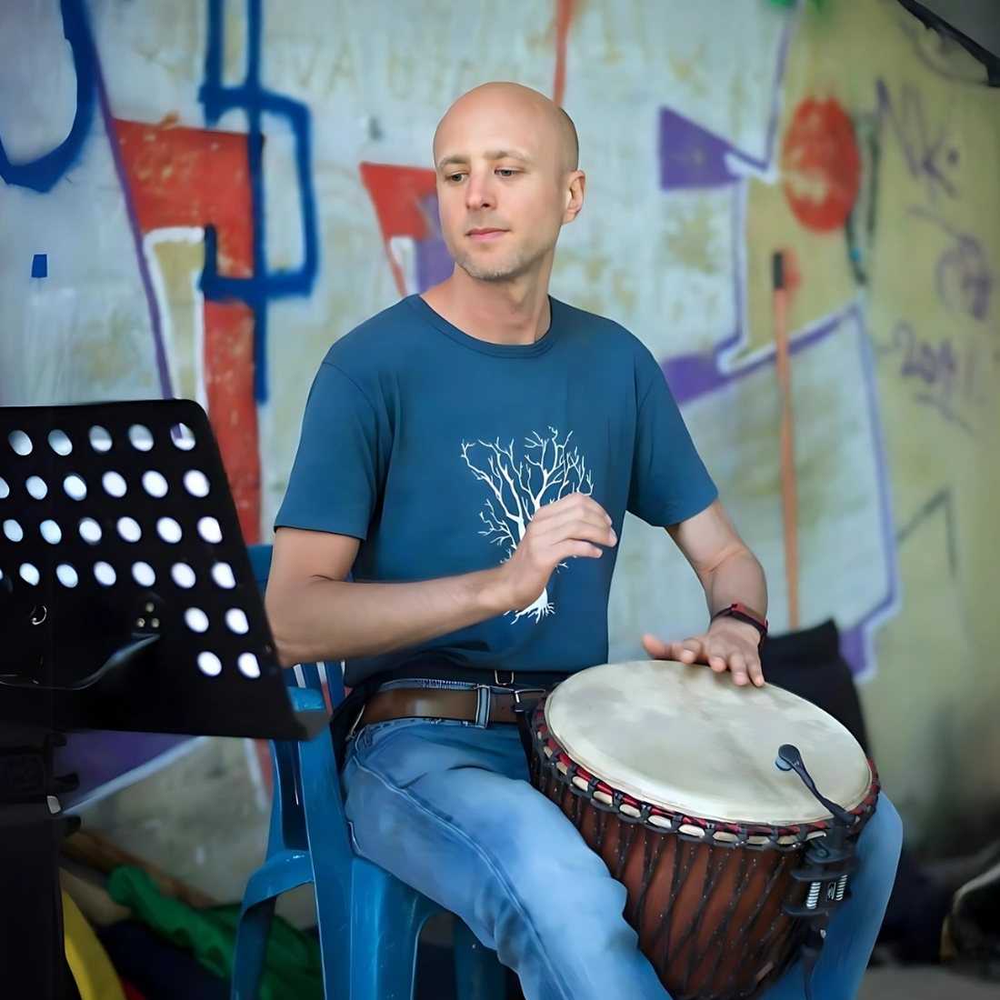
Neka glazba se ne stvara. Ona se sjeti. Sounding Silence je zbirka mantri koje sam primio tijekom godina života u Indiji i Aurovilleu i donio kući u Hrvatsku preko mora. Te melodije nisu počele sa mnom: izronile su iz tišine, prošle kroz mene i sad se vraćaju tebi, tražeći samo da ih se čuje u istoj tišini iz koje su došle. Deset prijenosa, drevni zvukovi u svom prvom obliku, sjeme koje još nije drvo.
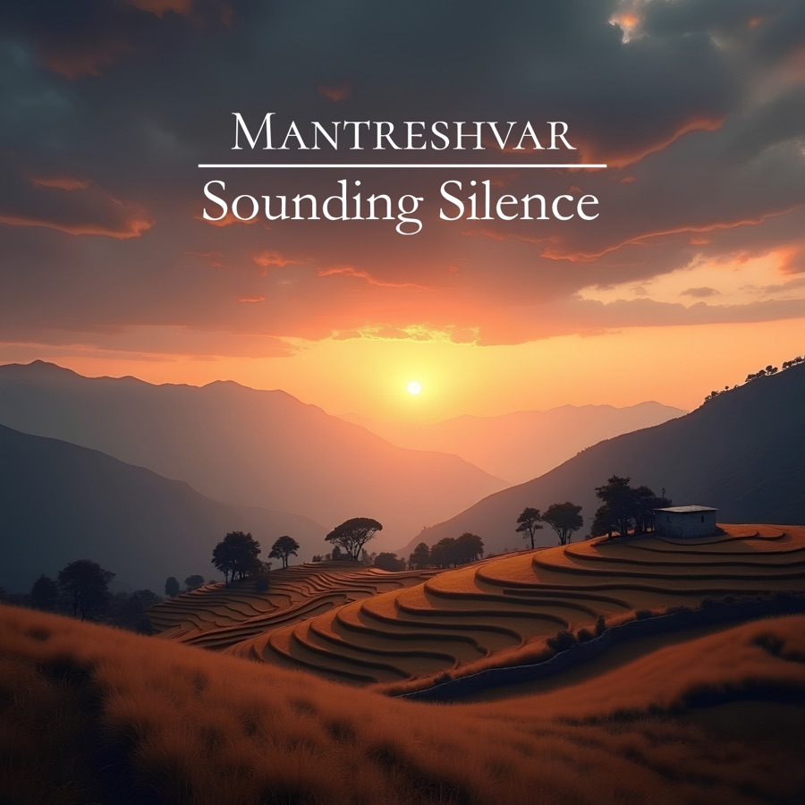
BonusSviramo fuziju plemenskih ritmova i smirujućih zvukova instrumenata za zvučno iscjeljenje. Ti zvukovi počivaju na božici ekstaze i transa. Djembe, okvirni bubanj, didgeridoo, gongovi i gitara.
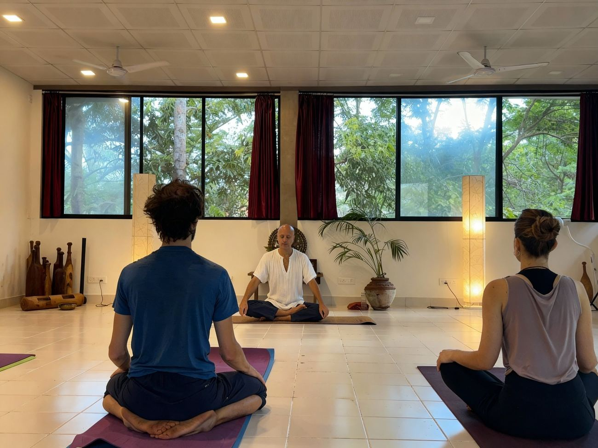
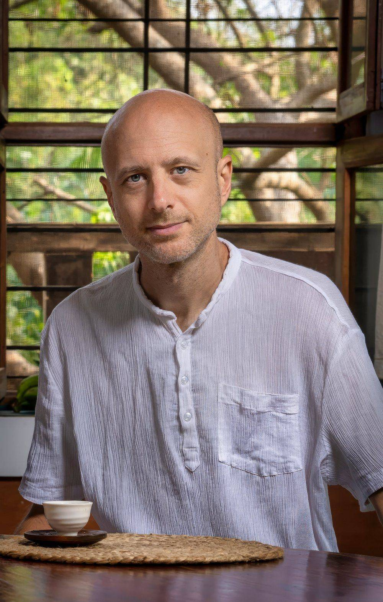
Sedam godina živio sam u Aurovilleu, međunarodnoj zajednici u južnoj Indiji nadahnutoj vizijom Sri Aurobinda. Ondje sam snimao zvučne vrtove i ručno izrađene instrumente, i počeo proučavati zvuk kao terapijsku modalnost, ne kao metaforu nego kao praksu.
Iz tog razdoblja nastala je Sun Moon Yoga metoda. Spaja sunce Vinyase s mjesecom Hatha yoge. Kreće se između sunčane i mjesečeve strane prakse, na dahu i pulsu bubnja. Tijelo se budi kroz pokret, um se smiruje kroz dah, duša pronalazi prostor tišine.
Praksa počinje toplo i polako, otvara kukove i kralježnicu, pa se diže u tok koji grije. Zatim se spušta u duže zadržane položaje gdje disanje preuzima vodstvo. Nema ogledala i nema natjecanja. Tko dolazi prvi put, prati vlastiti tempo.
Indijska sestra orkestra. Krug bubnjara, pjevača i plesača u studiju KalaBhumi u Aurovilleu.
Subotom u podne držali smo Dancing the Fire: plešemo i odmaramo uz živu glazbu kolektiva. Bubnjevi, glas i svi instrumenti koje ljudi donesu sa sobom.
Nedjeljom su bili satovi Rhythms for Evolution za djembe, u pet koraka: dah i ritam srca, svijest o tijelu, zapadnoafrički ritmovi, kreativnost i improvizacija, i na kraju krug bubnjeva. Bez prethodnog iskustva.
Svirao sam djembe i na Plesovima univerzalnog mira s Ashani Pluchino, u dvorani Maloka zajednice Anitya u Aurovilleu.
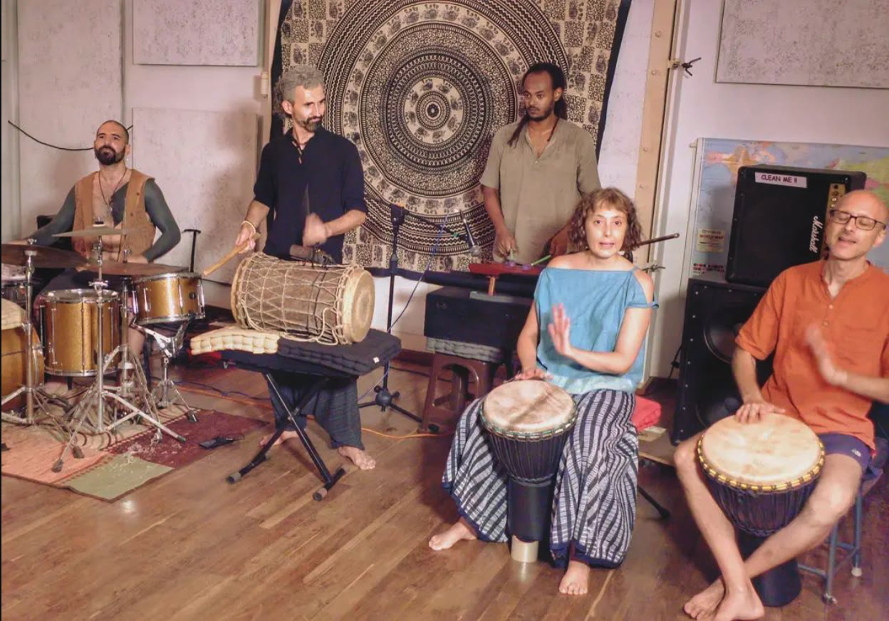
Večer ima tri dijela: otvaranje, ples i zatvaranje. Radim u sva tri. Ne tražim cijelu večer, svaki modul stoji sam za sebe. Vi odlučite što vam treba i gdje me staviti u program.
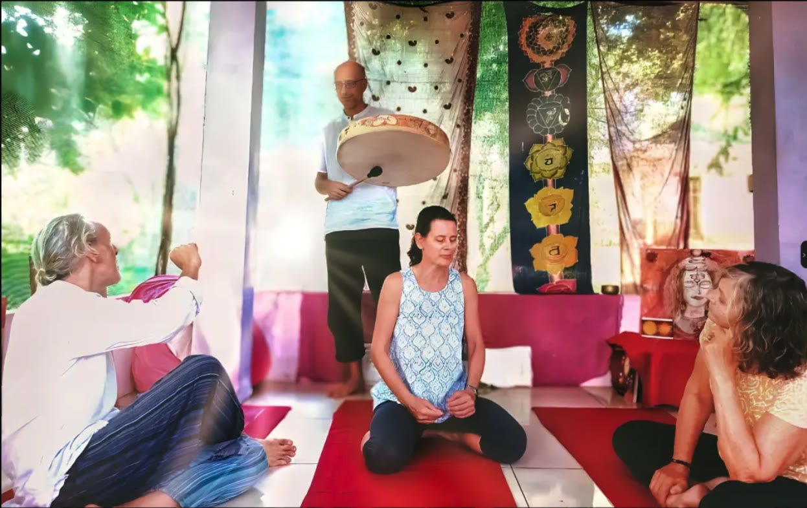
Prije plesa. Budimo tijelo, smirujemo um, otvaramo kanale.
Zagrijavanje kroz Sun Moon Yogu, sunce Vinyase i mjesec Hathe. Uz to pranayame: kapalabhati za buđenje, bhastrika za vatru, nadi shodhana za smirivanje i balans.
Vođenje prema svjetlu u srcu i svjetlu u glavi, uz sanskrtske mantre. Kratko, jednostavno, bez potrebe za iskustvom.
Zajedničko pjevanje vokala koje otvara energetske kanale i povezuje s pet elemenata. Glas kao alat, ne kao nastup. Nitko ne mora znati pjevati.
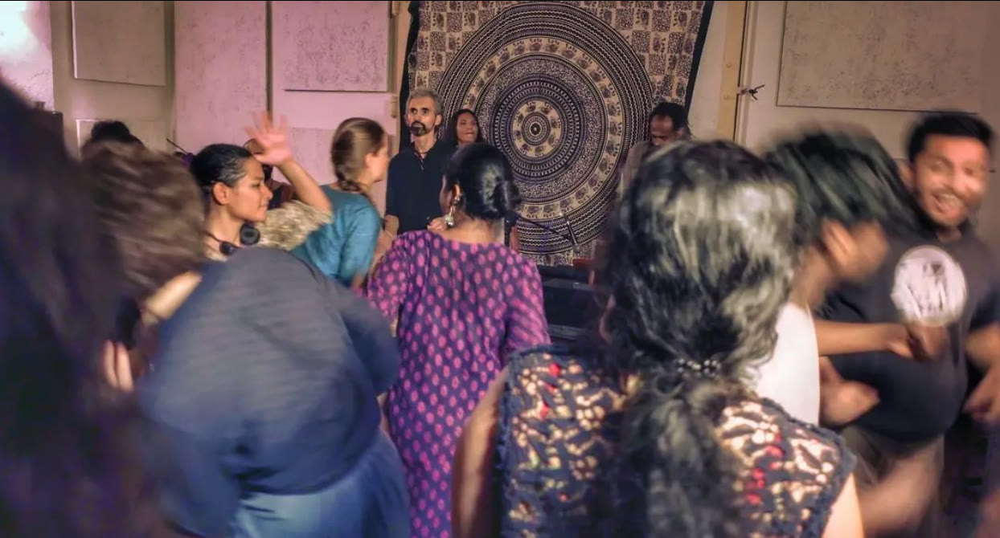
Srce večeri. Iz ploča ili iz ruku, ili oboje u isto vrijeme.
World organic house i etno elektronika, s bubnjevima zapadne Afrike, Gangesa i Amazone. Gradim luk iz duboke uzemljenosti prema vrhuncu pa meko natrag u tišinu. Mogu pokriti cijeli ples ili samo jedan dio.
Perkusije uživo, same ili preko seta. Okvirni bubanj, djembe, dundun, darbuka, shakeri. Mogu i voditi ritmičku radionicu prije plesa.
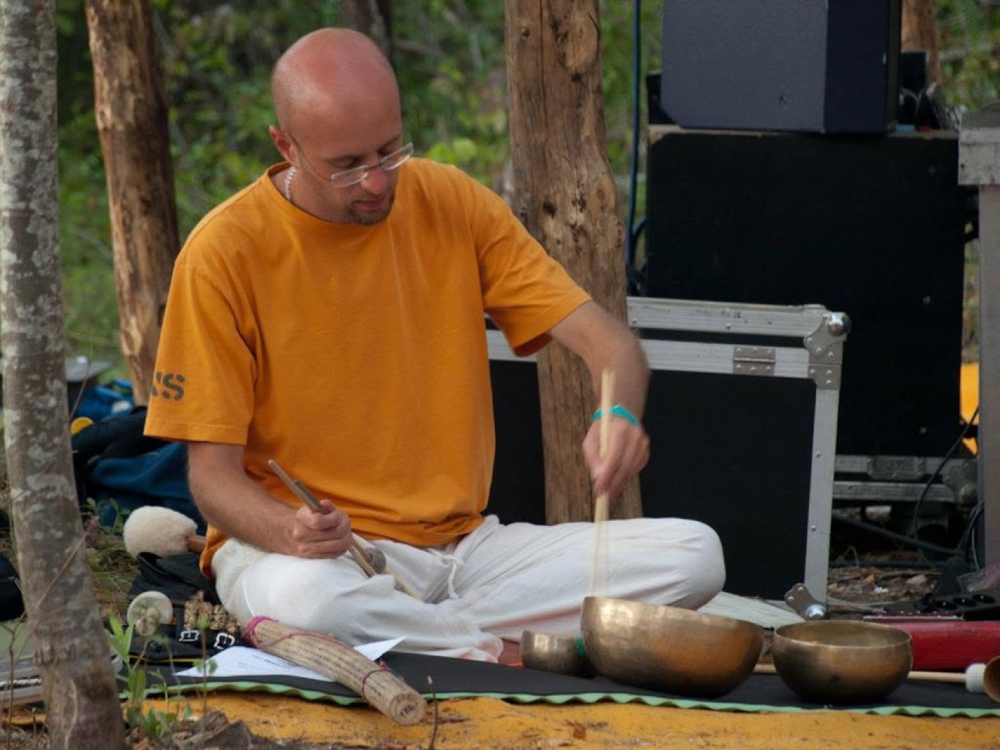
Poslije plesa. Ono što se otvorilo, zvuk slegne i zatvori.
Gongovi, zdjele, okvirni bubanj i glas. Ležeći, bez zadatka. Ono što je ples otvorio, zvuk slegne i zatvori.
Toniranje nije pjevanje. Držimo jedan vokal i puštamo ga da vibrira u tijelu. Svaki vokal ima svoje mjesto, svoju kvalitetu i svoj element. Slova nisu slučajna.
Zatvori oči i pritisni play. Glas te vodi kroz cijelu ljestvicu, od zemlje do tišine. Čita na engleskom.
Usmjeravamo pažnju na zdjelicu.
Početak, tlo na kojem stojimo. Otvoren zvuk, otvorena usta, težina koja pada u stopala. Zamislite korijenje koje raste iz vaših stopala i snažno vas povezuje sa zemljom, od koje primate podršku i hranjive tvari. Povezujete se sa zemljom svih kontinenata.
Pronalazimo dvije koščate izbočine zdjelice, lijevo i desno malo ispod pupka, i usmjeravamo pažnju na točku u sredini, odmah ispod pupka.
U je oblik čaše koja drži vodu, a voda je ono što stvara. Voda sve oživljava: kad vodu izlijemo na zemlju, sve počne rasti. Od uzemljenja do kreativnosti, stvaramo život i stvaramo sve. Zvuk se skuplja i produbljuje. Vibriramo u rezonanciji s jezerima, rijekama, morima i oblacima, svugdje gdje ima vode.
Usmjeravamo pažnju na pupak.
Zvuk se projicira prema van. Vatrom idemo kroz život i stižemo do onoga što smo naumili: ostvarujemo svoje ambicije, djelujemo u ovom trodimenzionalnom svijetu i ispunjavamo svoje ciljeve na vrijeme. To je fizička energija, vatra koja gori. Rezoniramo s vatrom svijeta: suncem, vulkanima i užarenom jezgrom pod našim nogama.
Usmjeravamo pažnju na prsa, na područje srca.
Krug. Nema početka ni kraja, svi smo jedno. Zvuk se širi u prsima i dalje u prostor. Širi se i naša sposobnost da volimo i prihvatimo svakoga onakvim kakav jest, a naša obitelj raste do cijelog planeta. Dišemo zajedno s vjetrovima i nebom koje obavija cijelu Zemlju.
Usmjeravamo pažnju na grlo.
Grlo je naše verbalno izražavanje i naša vibracija. Glas je poput otiska prsta cijelog tijela, našeg karaktera i naše razine energije: sve se može pročitati iz naše vibracije kroz glas. Spajamo sva četiri vokala u jedan neprekinuti zvuk, a iz polaganog prijelaza od vokala do vokala rađaju se alikvoti, viši tonovi iznad tona. To je istina i iskrenost: ono što stvarno imamo za reći, kažemo istinito, na način nenasilne komunikacije.
Nenasilna komunikacija (Marshall Rosenberg) ima četiri koraka: opažanje, ono što se dogodilo, bez prosuđivanja; osjećaj, što pri tome osjećam; potreba, koja moja potreba stoji iza tog osjećaja; molba, jasna i ostvariva molba, a ne zahtjev. Govori se u dva smjera: iskreno izražavamo svoje osjećaje i potrebe, i suosjećajno slušamo osjećaje i potrebe drugoga, bez krivnje i bez kazne. Kao kod O, prihvaćamo stvari i ljude onakvima kakvi jesu i izražavamo svoju istinu.
Usmjeravamo pažnju na sredinu glave, sjedište trećeg oka i epifize (pinealne žlijezde).
Zvuk stvaranja svemira, kako ga vide jogiji: vječan, uvijek prisutan zvuk koji vibrira kao temelj stvaranja. Pažnja se penje iza očiju i smiruje, skuplja se u jednu točku, epifizu, a zatim se širi, kao u velikom prasku, na cijeli svemir.
Usmjeravamo pažnju na tjeme, vezu između nas i ostatka svemira.
Na kraju ne pjevamo. Sjedimo u onome što je ostalo i osjećamo da je sve povezano sa svime.
Rhythms for Evolution je moja praksa u kojoj se spajaju bubnjevi, pokret, glas, svjesni ples i DJ setovi. Istražujemo drevni puls koji nas sve povezuje.
Sve se okreće. Sve se razvija. Namjera, rezonancija, melodija, ritam, dah, tok. Tim redom i uvijek iznova.
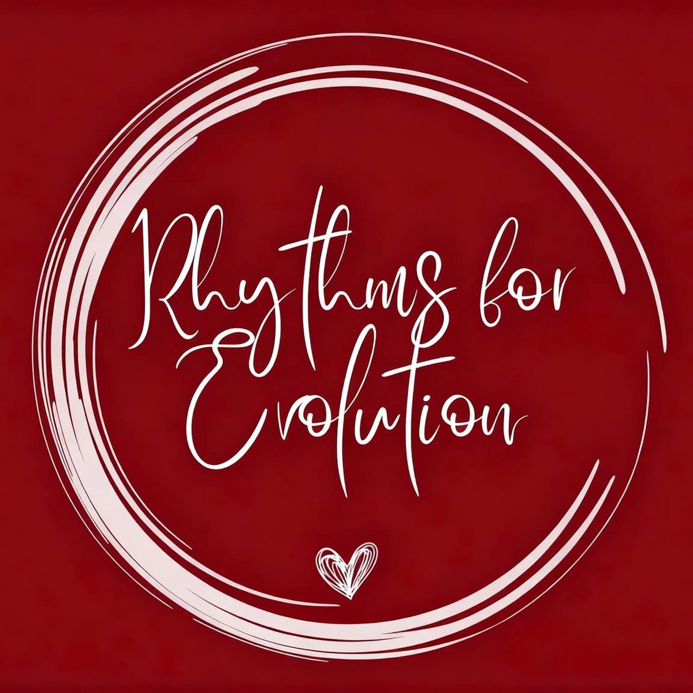
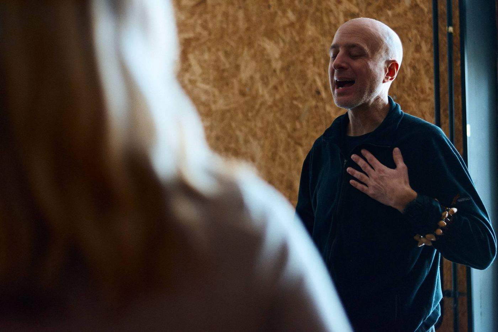
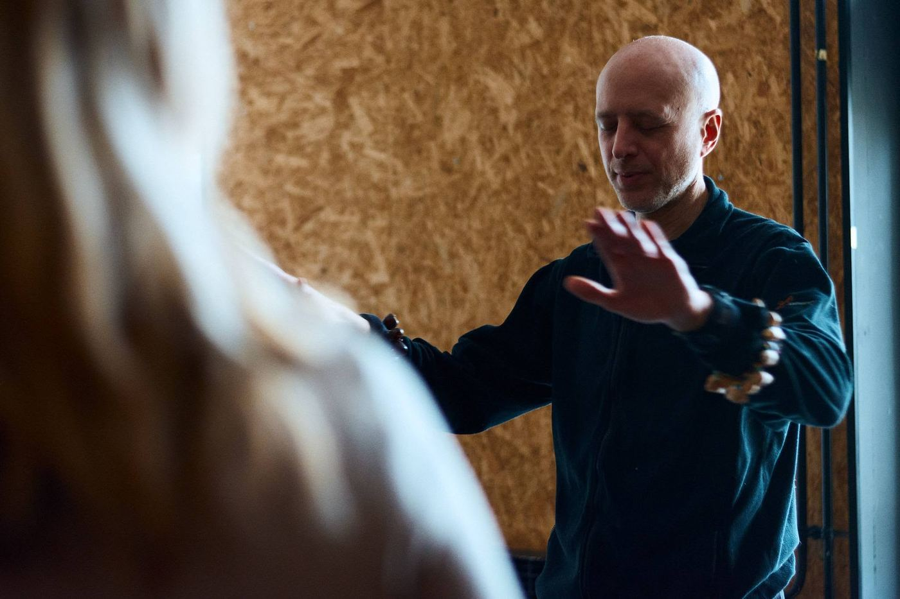
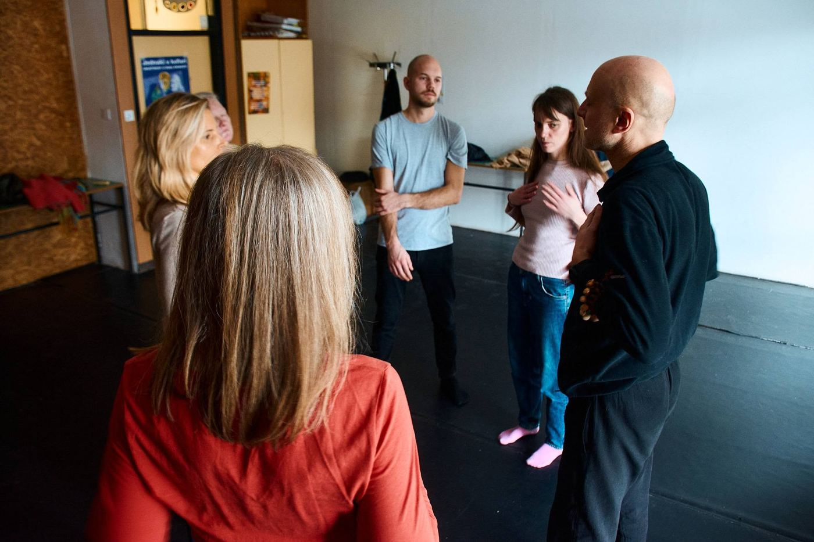
Učio sam kod perkusionističkih majstora u Hrvatskoj, Sloveniji i Izraelu, te kod gostujućih zapadnoafričkih virtuoza. Danas studiram okvirni bubanj kod Yshaija Aftermana, jednog od vodećih svjetskih svirača i učitelja frame druma.
Dvadeset sedam godina radio sam zvuk i sliku za hrvatske televizije, pa znam kako zvuk putuje prostorom i što tehnička ekipa treba iz DJ pulta. Stajao sam s obje strane.
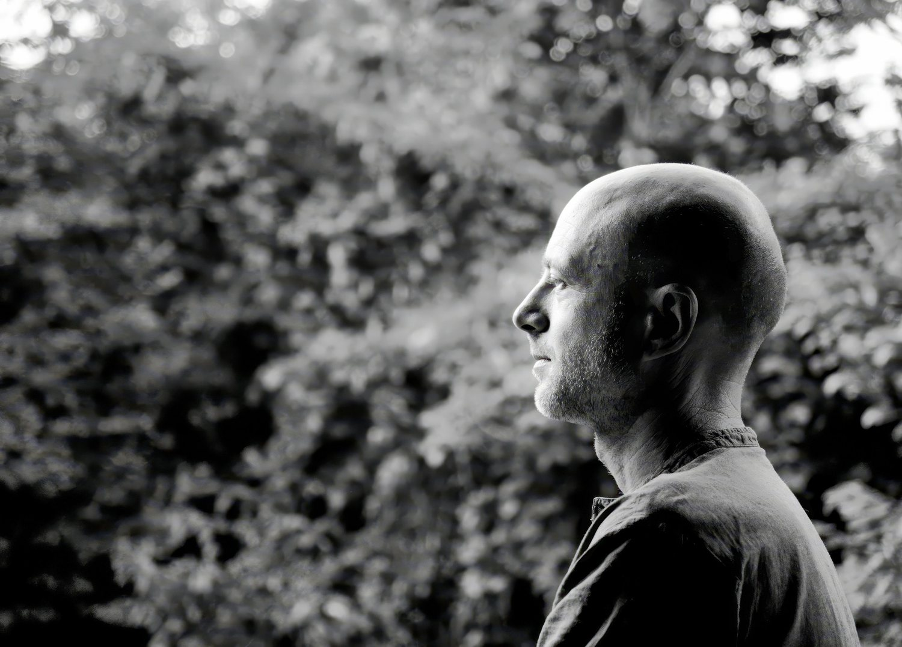
Ritam nije nešto što se nauči. Ritam je nešto čega se sjetiš.
Marko Boško · Mantreshwar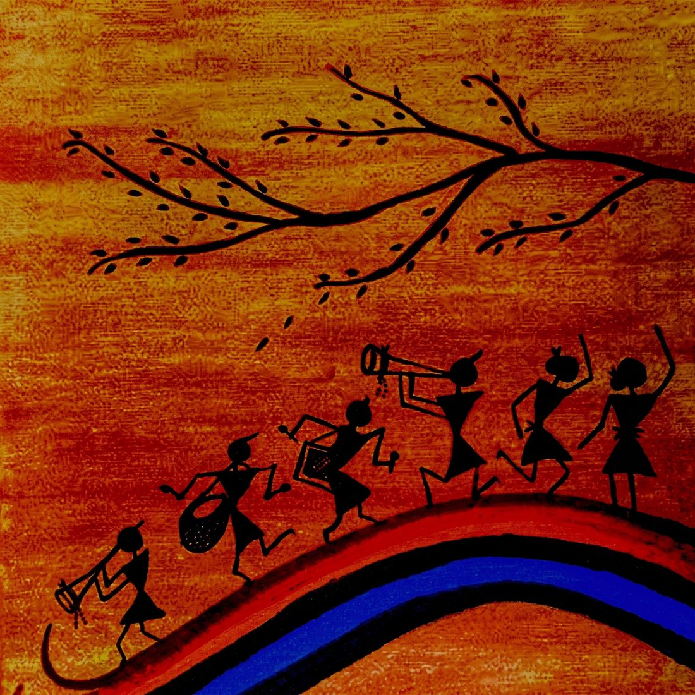
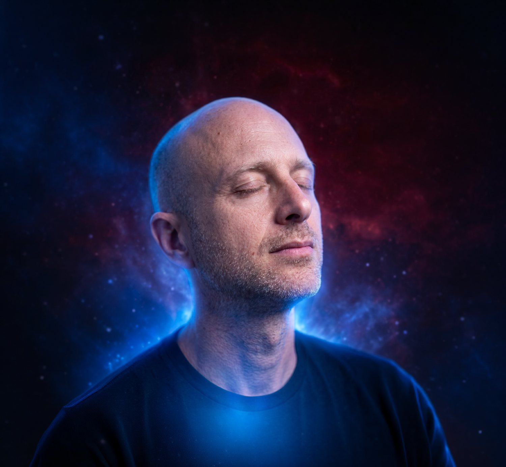
Sam programiram vlastitu DJ aplikaciju za Android mobitele, na otvorenom motoru Mixxx. Zamišljena je za mobilnog DJ-a: kontroler Hercules DJControl Mix Ultra preko Bluetootha, glavni izlaz na Bluetooth zvučnik i slušalice na USB, svaka tipka na bilo koju funkciju.
Kod je otvoren i besplatan (GPL). Kad bude spremna, svaki DJ će je moći preuzeti za svoj mobitel. Ovdje pratim napredak, korak po korak.
Dostupan sam za ecstatic dance večeri, zvučne kupke, radionice ritma i yoge i pokreta. Baza mi je Zagreb, spreman sam na put.